Slot-RAE
Streamlining Object-Centric Learning via Direct Representation Auto-Encoders
Paper under double-blind review
Zero-shot edits performed directly in the DINOv3 feature space. Red overlays show the selected slot masks.
TL;DR — Slot-RAE learns object slots on top of a frozen DINOv3 encoder and trains a slot-conditioned Diffusion Transformer from scratch to regenerate DINOv3 features. There is no VAE, no Stable Diffusion prior and no classifier-free guidance. A frozen RAE decoder maps the generated features back to pixels.
Abstract
Deploying object-centric models for real-world scene understanding typically requires complex pipelines to achieve both robust scene decomposition and high-fidelity generation. While recent diffusion-based approaches have improved visual quality, they rely heavily on pre-trained generative priors (e.g., Stable Diffusion) and external VAE latent spaces, bypassing the opportunity for direct semantic composition.
In this paper, we propose Slot-RAE, a framework that demonstrates true compositionality can be achieved by operating directly within the continuous semantic feature space of visual foundation models (e.g., DINOv3). Slot-RAE leverages a feature-space diffusion process via a Diffusion Transformer (DiT) and a Representation Alignment (REPA) head to compose the VFM latent space directly. Because the generative core is trained from scratch entirely within the frozen VFM space, it eliminates VAE bottlenecks and the need for task-agnostic generative pre-training.
Experiments on the COCO dataset confirm that this direct latent composition strategy yields state-of-the-art compositional capabilities. Slot-RAE provides robust zero-shot compositionality, high-fidelity image reconstruction, and effective unsupervised object discovery, functioning much faster and more efficiently than standard object-centric latent diffusion models.
Method
Slot Attention compresses the dense features F of a frozen DINO encoder into K object slots. A Diffusion Transformer then learns to denoise the same feature map, conditioned on the slots. Feature space is the only latent space: the target of the object-discovery bottleneck and the space of generation are identical.
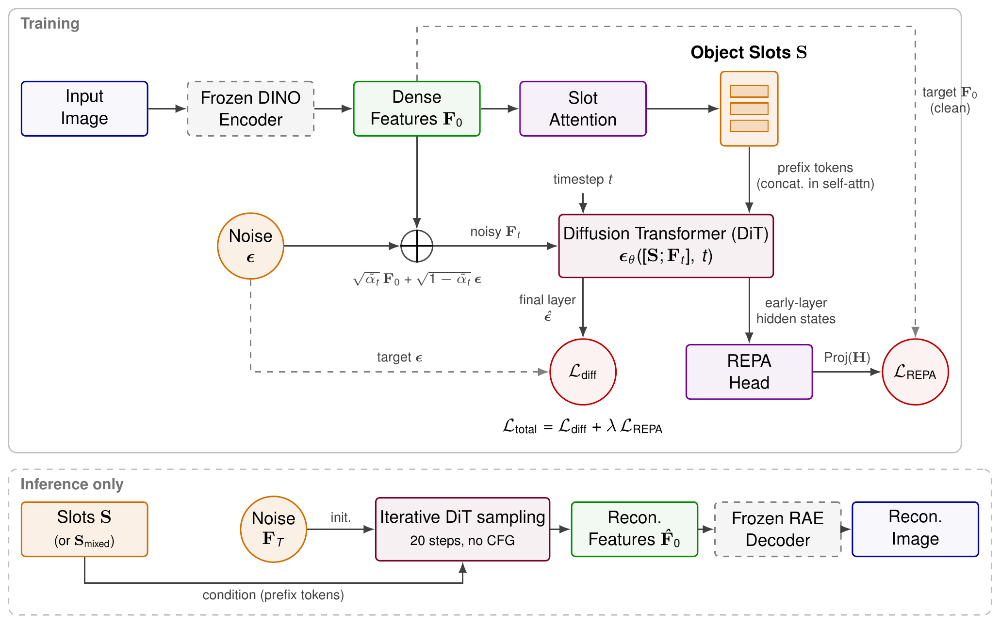
Diffusion in VFM feature space
Noisy DINOv3 features Ft are denoised by a DiT with a wide DDT head. The timestep modulates the network, and the object slots condition every denoising step.
Representation alignment
A lightweight REPA projection on an early DiT layer is aligned with the clean features. It stabilizes feature-space diffusion and yields more coherent object slots (+0.6 mBOi).
Trained from scratch
The only pre-trained parts are the frozen encoder, which defines the space, and the frozen RAE decoder, which is used for viewing only. Slots and DiT are trained end-to-end without any text-to-image prior.
Because the generated feature map lives on the same manifold as real DINOv3 features, slots extracted from different images can be removed, swapped or concatenated, and the result is decoded without any fine-tuning.
Unsupervised object discovery
Adding a generative diffusion decoder does not destroy scene decomposition. Among strictly unsupervised methods, Slot-RAE with DINOv3 reaches the best instance-level mIoU on PASCAL VOC. Unlike deterministic MLP and Transformer decoders, it also benefits from the stronger DINOv3 backbone.
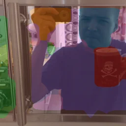
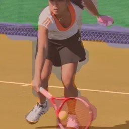
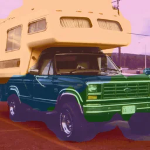
Slot-attention masks on COCO validation images; each color is one slot.
| Model | Comp. | Backbone / Decoder | PASCAL VOC 2012 | COCO | ||||
|---|---|---|---|---|---|---|---|---|
| mBOi | mBOc | mIoUi | mBOi | mBOc | mIoUi | |||
| Unsupervised object discovery | ||||||||
| Slot-Attention (MLP) | ✗ | CNN / MLP | 24.6 | 24.9 | – | 17.2 | 19.2 | – |
| DINOSAUR (MLP) | ✗ | DINOv2-B / MLP | 39.7 | 41.2 | 39.1 | 28.1 | 32.1 | 26.8 |
| ✗ | DINOv3-B / MLP | 38.1 | 42.5 | 36.9 | 25.4 | 31.5 | 24.0 | |
| DINOSAUR (Transf.) | ✗ | DINOv2-B / Transf. | 43.2 | 47.8 | 42.0 | 33.3 | 41.2 | 31.6 |
| ✗ | DINOv3-B / Transf. | 45.2 | 51.9 | 43.8 | 29.3 | 38.0 | 27.6 | |
| SlotDiffusion | ✓ | DINO / U-Net | 50.4 | 55.3 | – | 31.0 | 35.0 | – |
| Slot-RAE (ours) | ✓ | DINOv2-B / DiT | 45.0 | 48.6 | 44.1 | 29.1 | 34.4 | 27.4 |
| Slot-RAE (ours) | ✓ | DINOv3-B / DiT | 50.1 | 52.8 | 49.0 | 32.3 | 38.1 | 30.8 |
| Weakly-supervised (pre-trained Stable Diffusion prior) | ||||||||
| Stable-LSD | ✓ | DINOv2-B / U-Net | 32.1 | 35.4 | 31.5 | 25.9 | 30.0 | 24.7 |
| CODA | ✓ | DINOv2-B / U-Net | 55.4 | 61.3 | 50.7 | 36.6 | 41.4 | 36.4 |
| GLASS | ✓ | DINOv2-B / U-Net | 58.9 | 62.2 | 58.1 | 40.6 | 48.5 | 38.9 |
Mean over 3 seeds. Bold: best, underline: second best within each supervision category. “Comp.”: supports compositional generation.
More object discovery results
Input · slot attention masks · overlay (COCO validation).
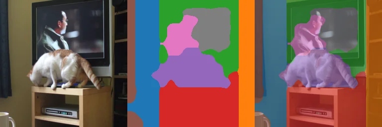
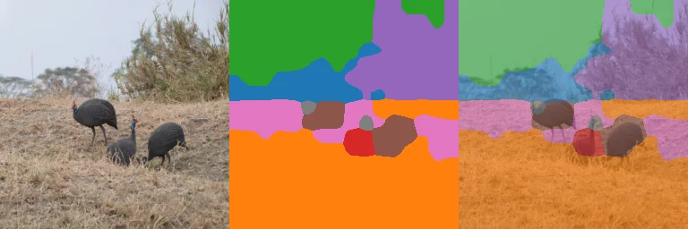
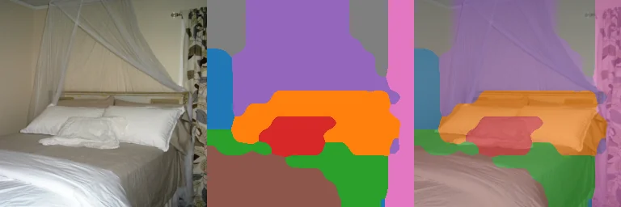
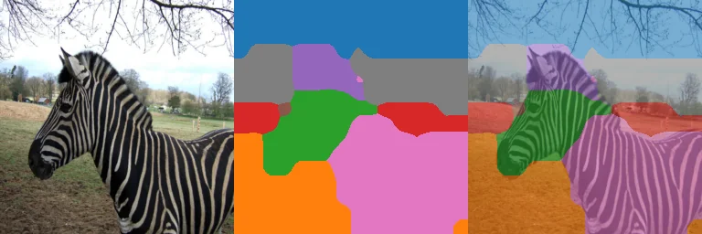
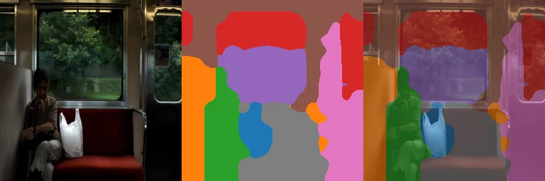
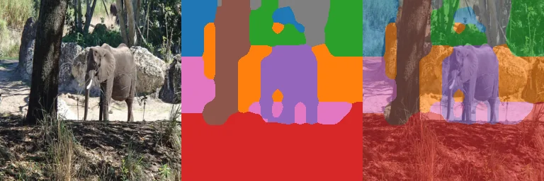
Image reconstruction
Images are regenerated from their slots alone. Stable-LSD oversmooths textures and distorts layouts. GLASS hallucinates plausible but wrong details, such as the cake's content or the surfer's pose and color. Slot-RAE keeps sharp boundaries and textures without relying on a hallucinating prior, and comes close to the non-compositional RAE upper bound.
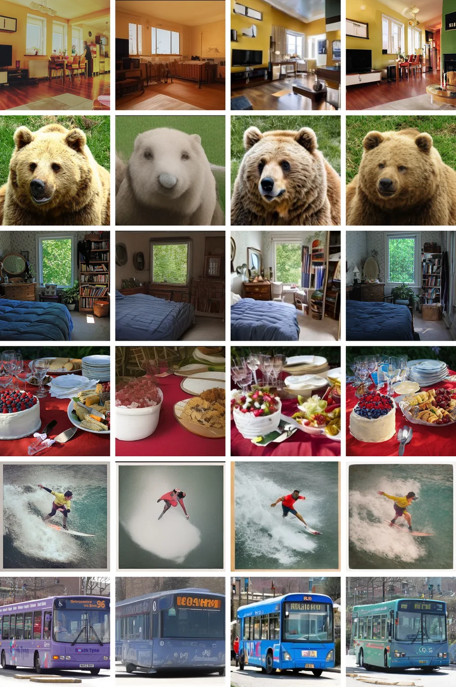
| Model | Reconstruction | ||||
|---|---|---|---|---|---|
| PSNR↑ | SSIM↑ | LPIPS↓ | FID↓ | KID×10³↓ | |
| Stable-LSD | 10.92 | 0.20 | 0.72 | 125.76 | – |
| GLASS | 11.14 | 0.25 | 0.57 | 21.48 | 6.78 |
| CODA | 10.69 | 0.29 | 0.59 | 13.96 | 2.05 |
| Slot-RAE (ours) | 13.93 | 0.33 | 0.46 | 10.11 | 0.54 |
| Upper bound (no slots, no composition) | |||||
| Original RAE | 14.11 | 0.46 | 0.25 | 8.06 | 0.32 |
COCO, mean over 3 seeds.
More reconstructions
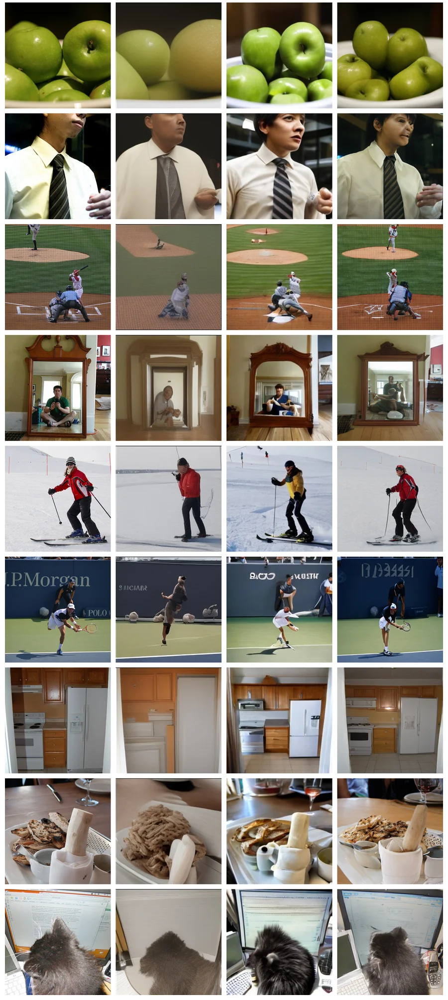
Zero-shot composition
Following CODA, slots are added, removed and swapped between unrelated COCO images, then decoded without any fine-tuning. Lighting, shadows and occlusions are resolved by the DiT. Slot-RAE sets the best distribution realism and identity preservation for composed scenes.
| Model (slot swapping, COCO) | FID↓ | KID×10³↓ | CLIP-I↑ |
|---|---|---|---|
| GLASS | 55.99 | 51.03 | 0.62 |
| CODA | 53.60 | 53.08 | 0.58 |
| Slot-RAE (ours) | 50.04 | 50.75 | 0.64 |
An object slot from a source image (red) is injected into a target scene without disrupting its geometry.
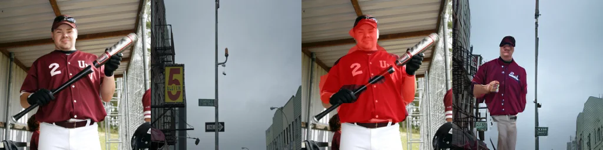
One slot (red) is zeroed out and the scene is regenerated from the same noise. The object disappears and the occluded region is inpainted, while the rest of the scene is preserved.
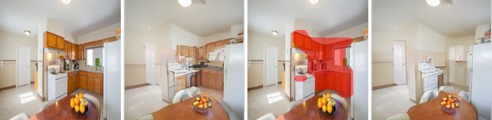
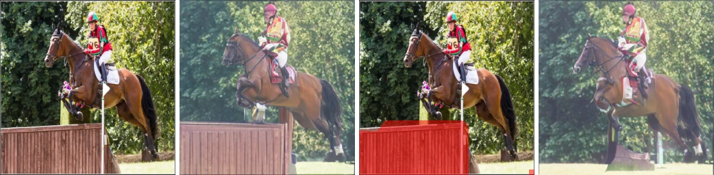
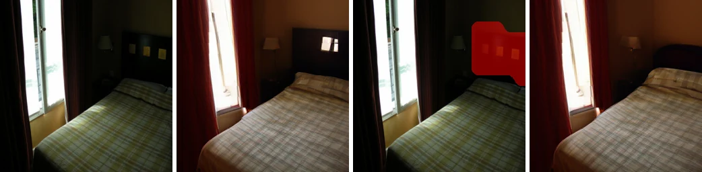
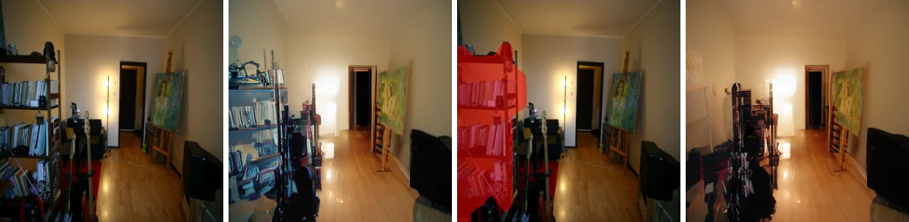
Slots from unrelated samples are blended into a single, coherent new scene.
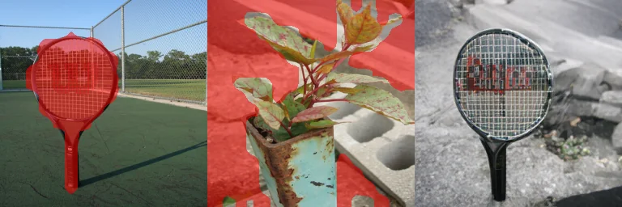
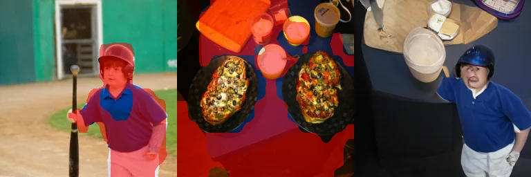
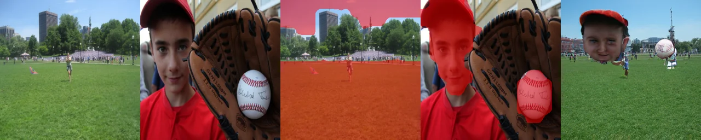
Slot mixing between two unrelated COCO images (the protocol of the table above). The selected slots (red in the top image, blue in the bottom image) are exchanged, and both scenes are regenerated.
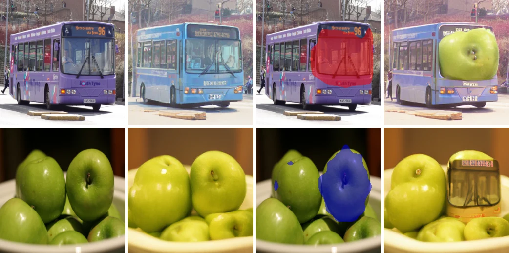
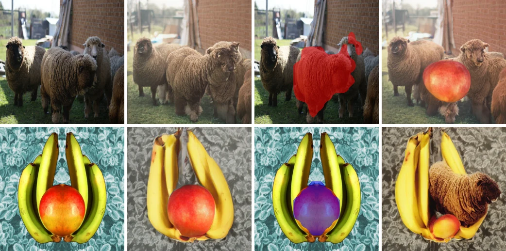
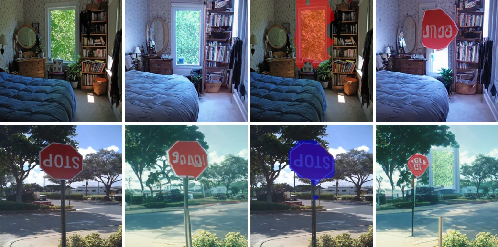
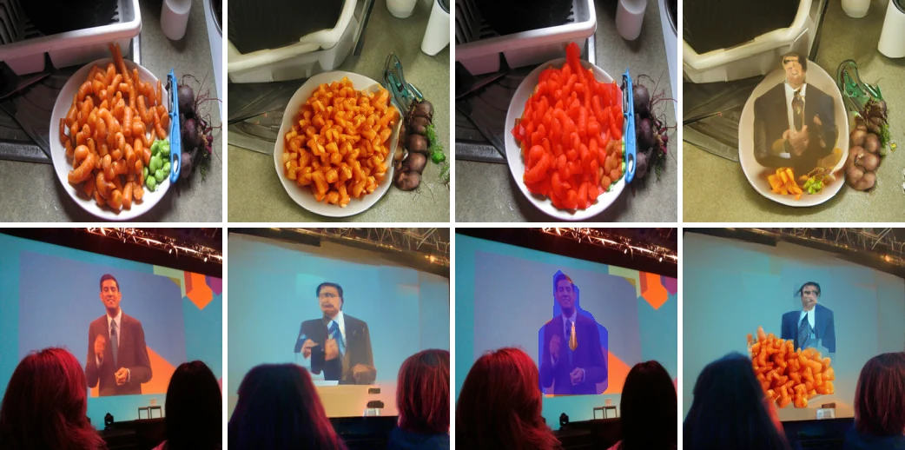
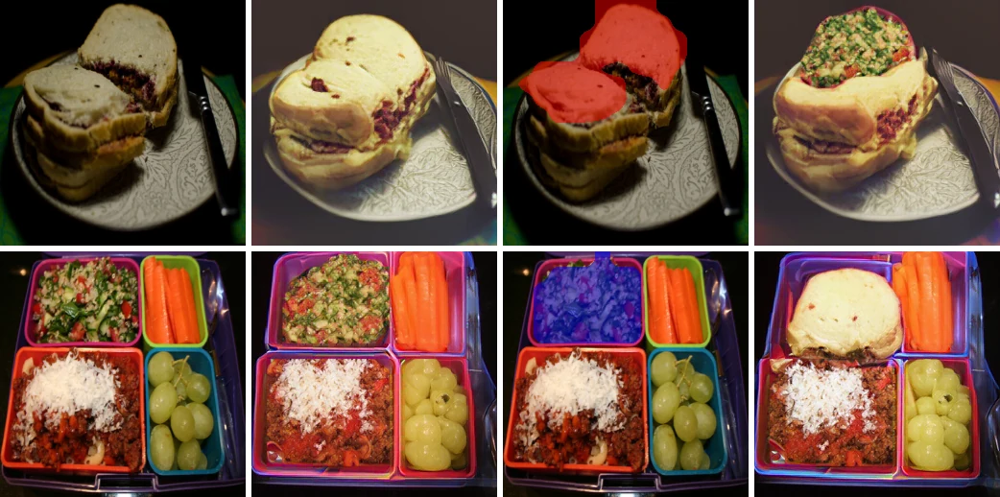
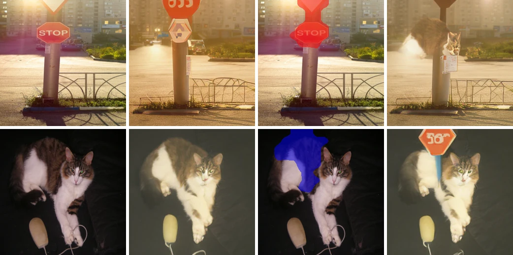
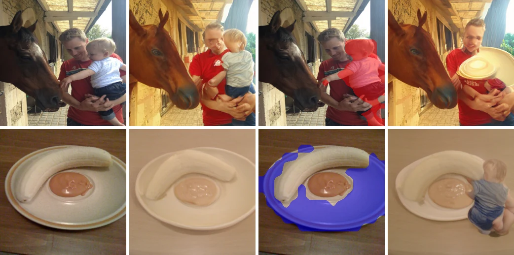
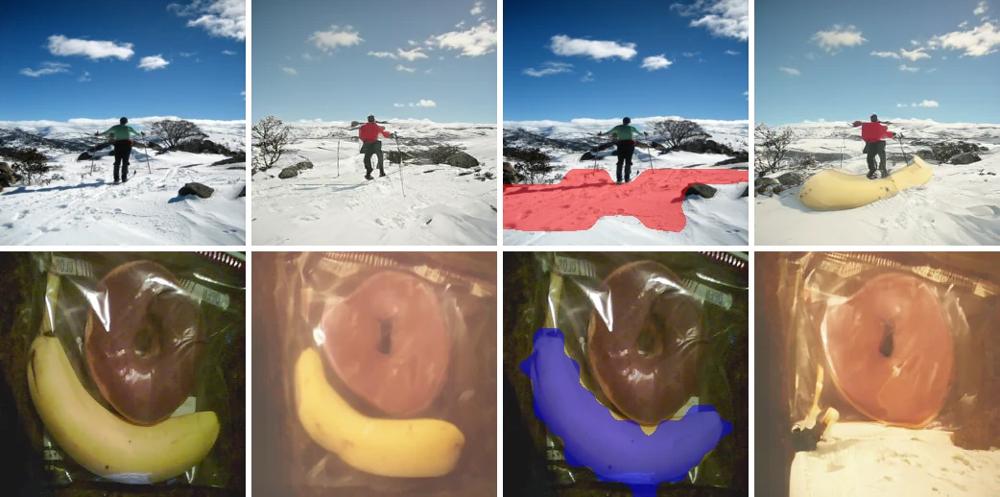
Operating purely in a compressed feature space, without classifier-free guidance, zero-shot edits can fail in complex scenes. The failures come mostly from entangled slots and ambiguous background priors.
Subtract
Correlated objects can share a slot, leaving floating hands behind. Removing an occluder can collapse the geometry behind it, like the bench. Dense scenes can leave floating artifacts, like the street signs. Removed objects can also be regenerated from the remaining slots and background: the player and the sheep reappear, and the cake is replaced by another one.
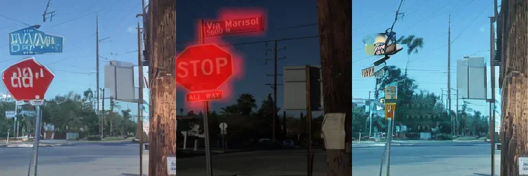
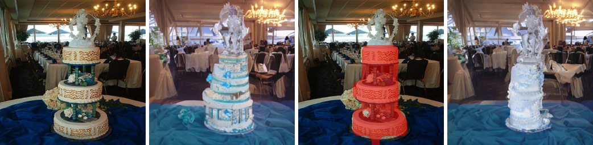
Add
Objects whose slot also encodes their surroundings are only weakly transferred: the bed turns into a vague shape, and the giraffe is barely visible in the new scene.
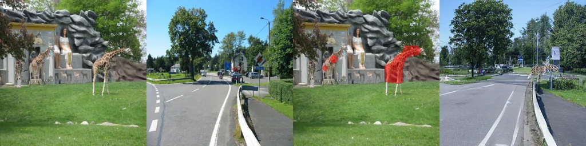
Swap
When the selected slots mostly cover background, swapping them only exchanges scene context: the burger is never transferred. Large textured slots can leak their appearance instead of their shape: zebra stripes appear on a wall, and a bun texture covers a bed.
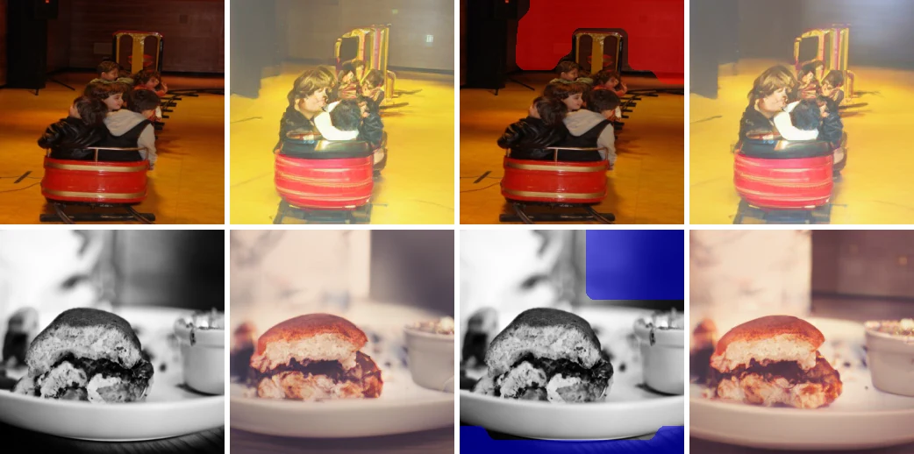
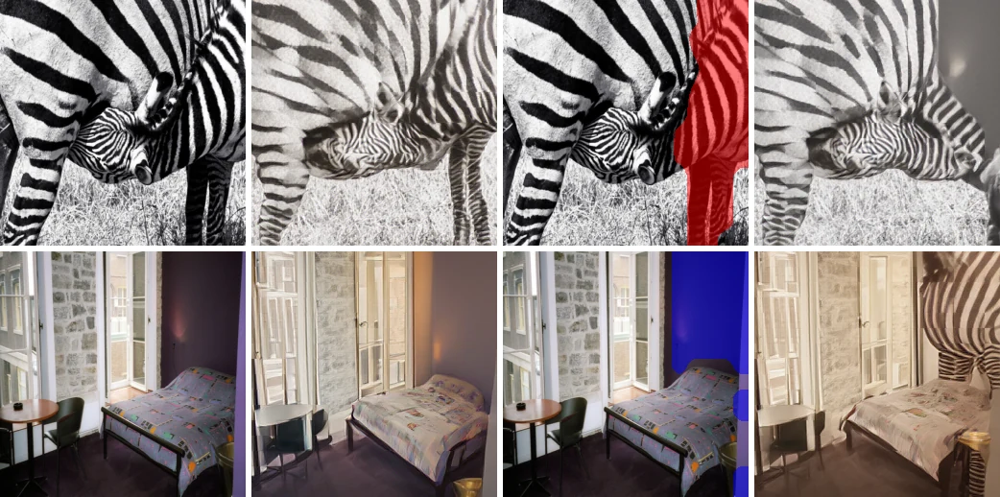
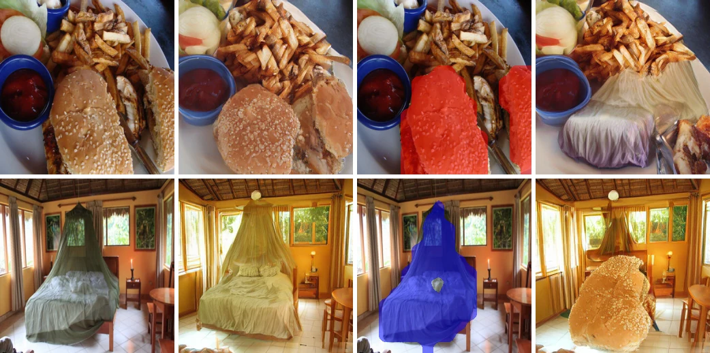
Training and inference efficiency
Slot-RAE drops the VAE, the pre-trained U-Net and classifier-free guidance. Its compact DiT runs the whole diffusion loop in the compressed semantic feature space. All models are measured with 20 denoising steps on a consumer laptop GPU (NVIDIA RTX A2000, 8 GB).
| Model | Training | Inference (1 image) | ||
|---|---|---|---|---|
| Params (M)↓ | Train time↓ | Memory (GB)↓ | Latency (s)↓ | |
| Stable-LSD | 1250† | 4.0 days | 4.8 | 10.3 |
| GLASS | 1385† | 6.0 days | 5.6 | 10.1 |
| CODA | 1038† | 10.0 days | 4.2 | 9.4 |
| Slot-RAE (ours) | 842‡ | 2.0 days | 2.9 | 1.35 |
† Includes frozen backbone / VAE and Stable Diffusion weights. ‡ Includes the RAE decoder in addition to the slot and feature-extraction modules.
Ablations
Stronger foundation features help directly: DINOv3 improves both decomposition and synthesis. REPA is what harmonizes the generative DiT with the VFM features. Larger decoders bring diminishing returns, because an over-expressive decoder starts to bypass the slot bottleneck. Naively summing multi-layer features (the RAEv2 approach) severely hurts both decomposition and reconstruction.
| Variant | mBOi↑ | mBOc↑ | PSNR↑ | SSIM↑ | LPIPS↓ | FID↓ |
|---|---|---|---|---|---|---|
| Full model: Slot-RAE-B, DINOv3-B, REPA, 768-d slots | 32.3 | 38.1 | 13.93 | 0.33 | 0.46 | 10.11 |
| (a) Decoder scale | ||||||
| Slot-RAE-S (60M) | 32.3 | 38.7 | 13.27 | 0.31 | 0.50 | 11.92 |
| Slot-RAE-L (470M) | 32.5 | 38.3 | 13.50 | 0.32 | 0.48 | 10.44 |
| Slot-RAE-XL (839M) | 32.4 | 38.1 | 13.31 | 0.32 | 0.49 | 10.61 |
| (b) VFM encoder | ||||||
| DINOv2-S | 29.4 | 34.3 | 12.83 | 0.29 | 0.51 | 10.45 |
| DINOv2-B | 29.1 | 34.4 | 12.94 | 0.30 | 0.52 | 11.85 |
| DINOv3-S | 31.4 | 37.3 | 13.40 | 0.31 | 0.49 | 10.31 |
| (c) REPA head | ||||||
| Without REPA | 31.7 | 37.9 | 13.53 | 0.32 | 0.49 | 10.54 |
| (d) Slot dimension | ||||||
| 256 | 32.8 | 38.4 | 13.64 | 0.32 | 0.48 | 10.52 |
| 384 | 32.7 | 38.3 | 13.77 | 0.32 | 0.47 | 10.25 |
| 512 | 32.4 | 38.1 | 13.57 | 0.32 | 0.49 | 10.71 |
| (e) Multi-layer integration | ||||||
| Naïve MSL (addition, as in RAEv2) | 29.3 | 33.8 | 10.96 | 0.27 | 0.64 | 46.39 |
COCO. Smaller slots (256-d) factorize objects slightly better, while 768-d slots give the best synthesis.
Limitations
Slot-RAE inherits the blind spots of its frozen backbone. Fine textures, extreme lighting or very small objects that the encoder misses remain out of reach for the diffusion decoder. Pixel-space viewing relies on a frozen RAE decoder, which may introduce its own artifacts. Finally, a gap remains with methods that use weak supervision from text-to-image priors. Text-aligned representation autoencoders are a promising way to close it without giving up the efficiency of the feature-space formulation.
BibTeX
@article{slotrae2026,
title = {Slot-RAE: Streamlining Object-Centric Learning
via Direct Representation Auto-Encoders},
author = {Anonymous},
journal = {Under review},
year = {2026}
}